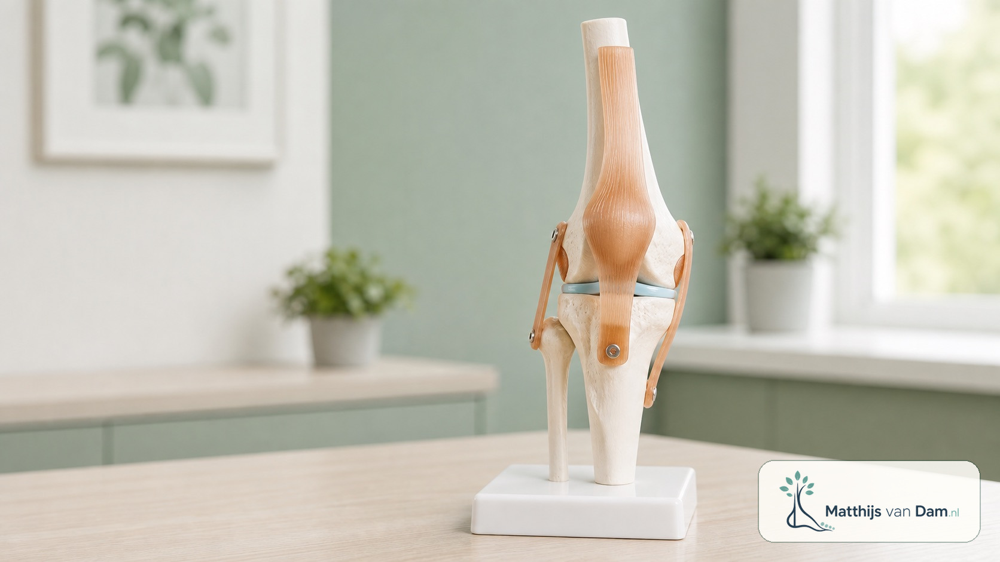
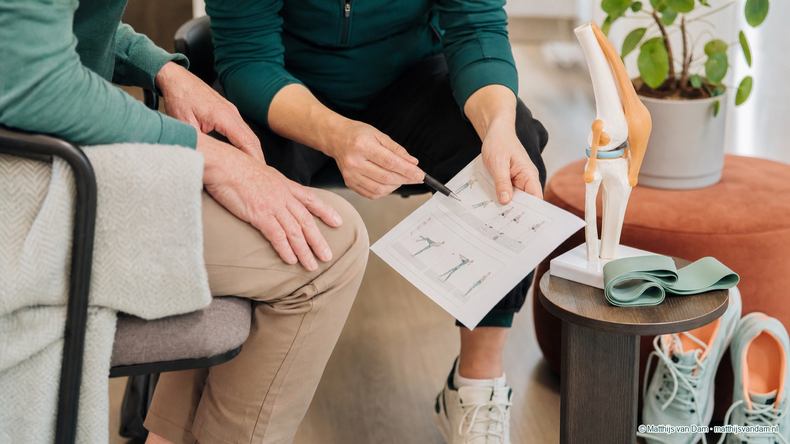
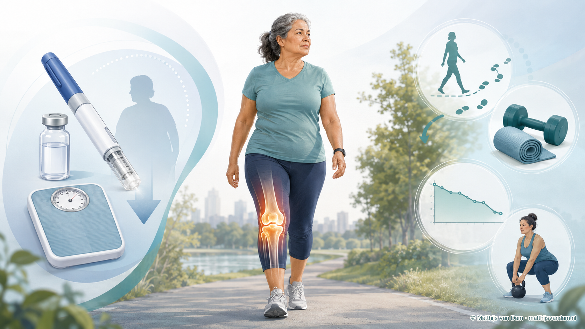
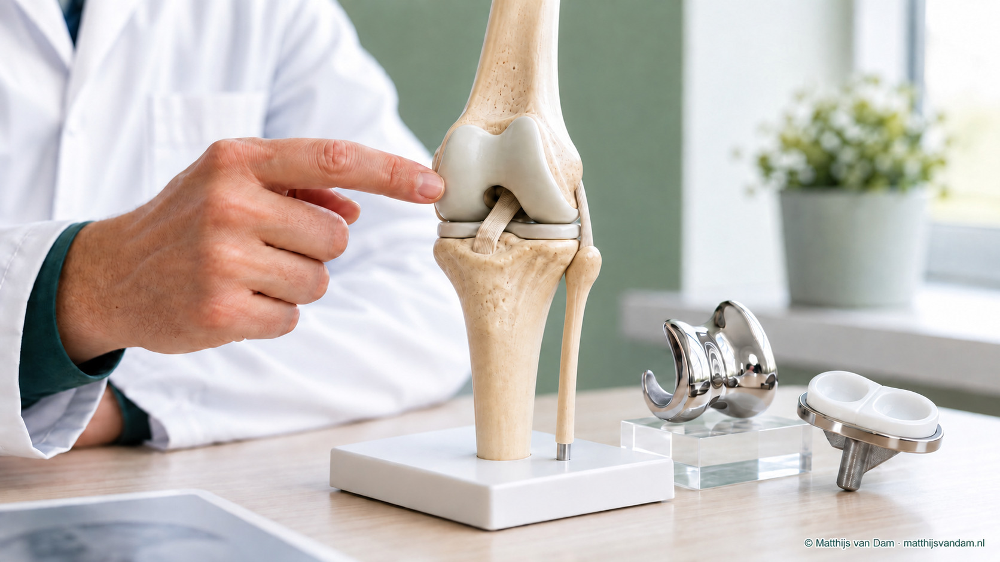

Artrose en leefstijl
Artrose, gewicht en bewegen
Als orthopeed heb ik bijzondere interesse in mensen met artrose die ook overgewicht of obesitas hebben en moeite ervaren met bewegen. Daar houd ik me in de spreekkamer en in mijn onderzoek veel mee bezig.
Daarom heb ik hier mijn uitleg, de tool Meer dan je BMI en artikelen bij elkaar gezet. Je leest ook over mijn onderzoek en samenwerking aan artrosezorg.
01 · Algemene uitleg
Artrose begrijpen
De uitleg hieronder gaat vooral over knieartrose. Kies de vraag die je bezighoudt en lees meer over klachten en behandelafwegingen, als voorbereiding op een gesprek met je behandelaar.

Wat is knieartrose?
Uitleg over klachten, onderzoek en de verschillende behandelrichtingen.
Lees over knieartrose →
Bewegen met artrose
Over bewegen, oefenen en omgaan met wisselende klachten.
Lees over bewegen →
Obesitas en gewrichtsklachten
Hoe gewicht, pijn en bewegen kunnen samenhangen en welke ondersteuning bespreekbaar is.
Lees over de samenhang →
Een knieprothese bij obesitas
Over de afweging, voorbereiding en timing van een knieprothese.
Lees over de afweging →02 · Interactieve uitleg
Meer dan je BMI
Ik heb deze tool gemaakt om je uit te leggen wat je BMI betekent, met aandacht voor je gezondheid, je gewrichten en wat je in het dagelijks leven wilt kunnen.
Vul je lengte en gewicht in en loop stap voor stap door de uitleg. Als je wilt, kun je ook je buikomvang meenemen.
Je invoer blijft op je eigen apparaat en wordt niet opgeslagen of verstuurd.
Bekijk Meer dan je BMIVoor volwassenen. De tool geeft algemene uitleg en stelt geen diagnose.
04 · Onderzoek en samenwerking
Mijn werk aan artrosezorg
Naast mijn werk in de spreekkamer doe ik onderzoek en draag ik bij aan leefstijlprojecten en samenwerking in de regio. Hieronder lees je over de projecten en mijn rol daarin. Voor zorgprofessionals is er ook informatie over overleg en verwijzing.
Wil je bijdragen aan onderzoek?
Voor mijn onderzoek zoek ik regelmatig patiënten die willen bijdragen. Via mijn nieuwsbrief laat ik weten wanneer ik deelnemers zoek. Bij iedere oproep lees je wat het onderzoek inhoudt en hoe je je kunt aanmelden. Schrijf je in voor mijn nieuwsbrief →
Transmuraal Tilburg Cohort
Met dit project wil ik uitleg en begeleiding in het ziekenhuis en de regio beter op elkaar laten aansluiten. We onderzoeken hoe patiënten deze zorg gebruiken en ervaren.
Lees over het cohort →Leefstijl in de orthopedie
In een landelijke werkgroep werk ik mee aan manieren om leefstijl op een passend moment te bespreken en ondersteuning onderdeel te maken van de orthopedische zorg.
Lees over mijn bijdrage →We Walk
Met Tilburg University onderzoek ik of digitale opdrachten en spelelementen op je telefoon wandelen aantrekkelijker kunnen maken.
Lees over We Walk →VRxOA
Ik onderzoek of ervaringen in een virtuele omgeving kunnen helpen om doelen en keuzes rond artrose en leefstijl concreter te maken.
Lees over VRxOA →